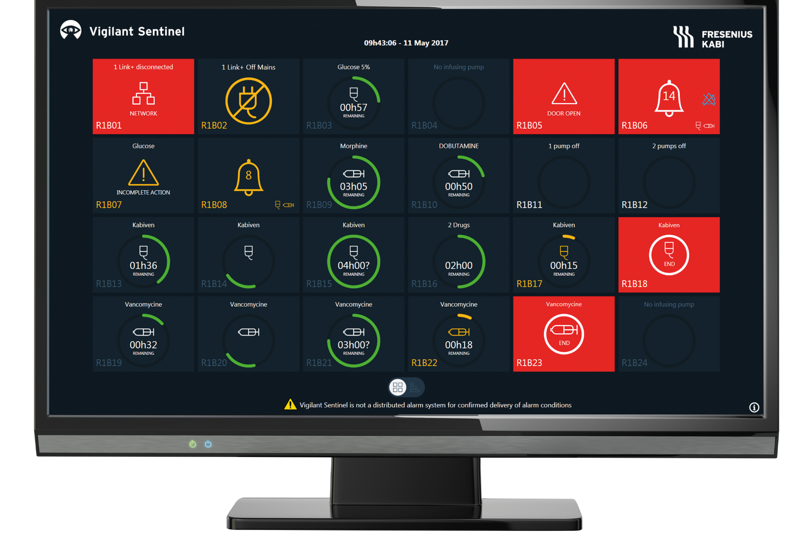
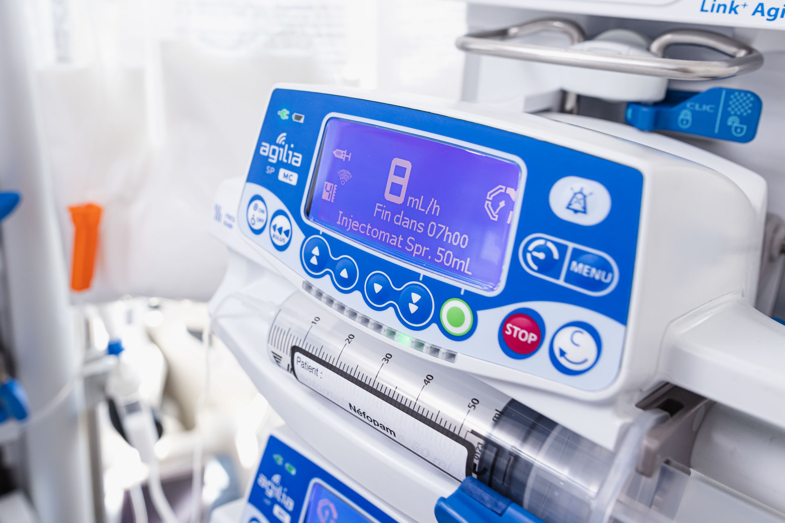
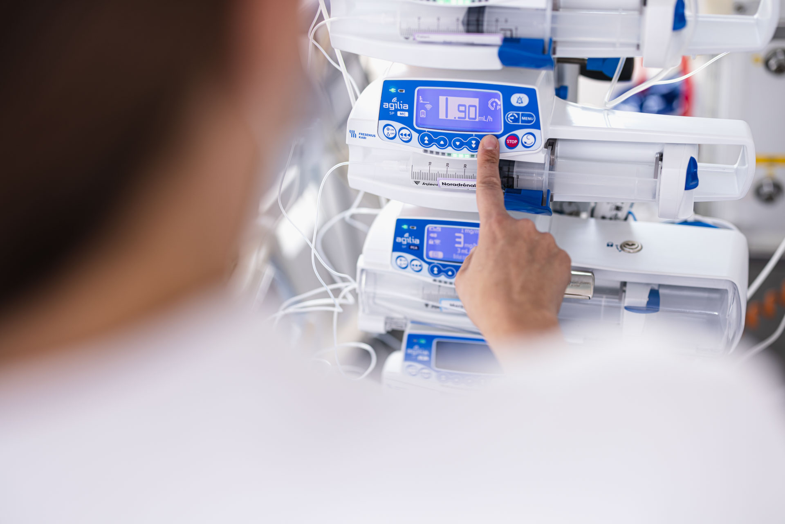

Tentang Service Center MedTech
MedTech sebagai penyedia perangkat medis berkualitas tinggi, mengutamakan keandalan dan kinerja optimal dari alat-alat kesehatan yang dipasok kepada pelanggan di sektor perawatan kesehatan. Dalam rangka mempertahankan standar kualitas yang tinggi, MedTech menghadirkan layanan Service Center khusus untuk alat kesehatan infus dan syringe pump.
Layanan Service Center Alat Kesehatan Infus dan Syringe Pump dari MedTech bertujuan untuk menyediakan solusi yang andal dan responsif dalam memelihara dan memperbaiki perangkat medis yang kritis untuk sektor perawatan kesehatan. Dengan fokus pada kualitas, keamanan, dan kepuasan pelanggan, kami berkomitmen untuk menjadi mitra yang dapat diandalkan dalam memenuhi kebutuhan teknis dan operasional Anda.

SENTINEL Central Monitor adalah sistem pemantauan untuk pompa infus Agilia. Ini memungkinkan pengawasan multiple pompa infus dari satu lokasi. Tujuannya adalah meningkatkan keamanan dan efisiensi dalam memberikan perawatan infus kepada pasien dengan memberikan pemberitahuan tentang kondisi yang memerlukan perhatian, seperti kesalahan dosis atau baterai lemah.

Kontrak layanan untuk pompa infus Agilia memberikan manfaat berupa pemeliharaan rutin, dukungan teknis, penggantian suku cadang, peningkatan keandalan, dan pelatihan untuk petugas medis. Ini semua bertujuan untuk memastikan kinerja optimal dari pompa infus, mendukung perawatan pasien yang aman, dan mengurangi gangguan operasional.

Pelatihan aplikasi dan teknisi bertujuan untuk mengajarkan peserta tentang penggunaan dan pemeliharaan aplikasi serta teknologi terkait. Peserta akan belajar instalasi, konfigurasi, dan pemecahan masalah terkait aplikasi dan perangkat keras. Pelatihan ini memungkinkan peserta untuk meningkatkan keterampilan praktis mereka dalam lingkungan kerja yang berkaitan dengan teknologi.